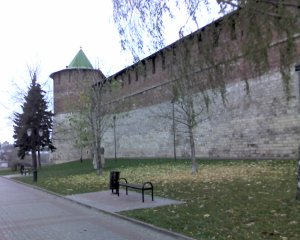
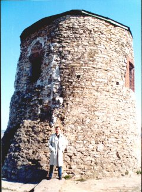
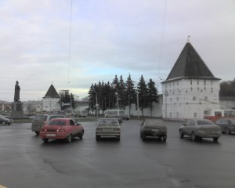
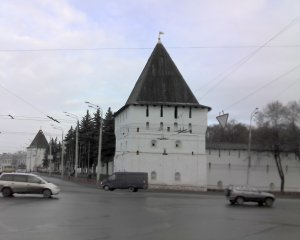
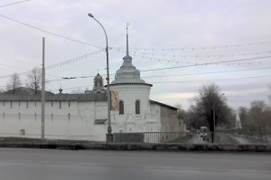
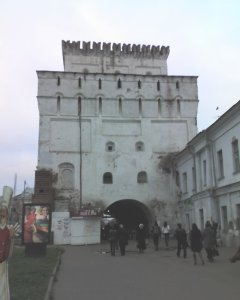
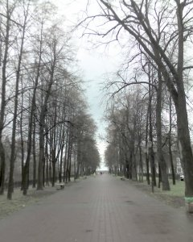
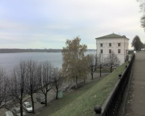
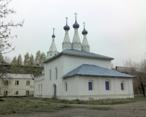

В школьные годы наш класс водили на экскурсию по краеведению в комплекс Спасо-Преображенского монастыря. Экскурсовод объясняла, зачем нужны бойницы, как защитники города могли поливать врага кипящей смолой через специальные желоба. Не могла она ответить только на один вопрос: какие же осады выдержали эти стены? По официальным данным - почти никаких. В 1571 году здесь от подошедших к Москве войск крымского хана Девлет-Гирея укрывался Иван Грозный. Весной 1609 года кремль выдержал 23-дневную польскую осаду. Но построен-то этот форпост как минимум в середине XVI века! Что же получается? Так, на всякий случай возвели? Верится в это с трудом.
Считается, что каменные стены ярославского кремля (который традиционно считается укрепленной территорией находившегося здесь Спасо-Преображенского монастыря) появились после пожаров 1501 и 1536 гг. Думается, что закончено строительство было к середине столетия, о чем свидетельствуют архитектурные особенности крепости.

Возьмем для сравнения стены Нижегородского кремля, возведенные несколько раньше ярославских (1508 - 1511 гг., см. фото справа). Они имеют гораздо большую протяженность, и высоту, но в инженерном отношении уступают: плоские поверхности, простые формы.

Думаю, что прототипом нижегородского кремля и подобных ему строений можно считать такие древние строения, как Чертово городище в Елабуге. От этих укреплений сохранилась всего одна башня, с датировкой возведения которой специалисты до сих пор затрудняются, но фортификационные принципы на Каме использованы те же, что и на Волге: высокий берег как естественная защита, круглые башни, соединенные простыми стенами.
В Ярославле же мы видим более сложные фортификационные ухищрения, гораздо в большей степени препятствовавшие проникновению врага в крепость: стены с выступами, не дающими возможности вскарабкаться по вертикали и приставить лестницу, многоярусные зубцы, чтобы разместить большее количество стрелков, многочисленные бойницы и желоба для кипящей смолы по всему периметру. Есть и более хитроумное оборонительное сооружение - захаб. О нем речь пойдет ниже. Видимо, у ярославцев было не меньше оснований опасаться вражеских набегов, чем у нижегородцев. Так что вряд ли ярославский кремль на берегу Которосли изначально задумывался как укрепленная обитель монахов. Скорее всего, это действительно была крепость, возведенная взамен располагавшегося ближе к Волге “рубленого города”.
Вот что пишет об этих стенах Дон Хуан Персидский, проезжавший мимо них зимой 1600 года: “Мы… пришли в город, именуемый Ярославлем… Здесь одна из самых мощных крепостей, которые мы видели во всей Московии и выглядит она еще сильнее и величественнее от реки Барем, протекающей вблизи крепости” Записки Дона Хуана Персидского // Арабески истории: альманах. М., 1996. Т. 1. С. 427.
Что же это за река Барем? Комментатор Ле-Стрендж и вслед за ним современный издатель процитированного альманаха считают, что Дон Хуан Персидский “по-видимому, не знал, что река, по которой он плыл от Ярославля до Рыбинска - Волга”. Однако из предыдущего текста ясно, что средневековый автор прекрасно ориентируется в географии Московии и перепутать Волгу с какой-либо другой рекой не мог. Так что скорее всего он имеет в виду именно крепость Спасо-Преображенского монастыря, а река Барем, с которой прекрасно видны эти грозные стены и возвышавшиеся в те времена над ними башни - это Которосль. На Волге если и стояли стены, то земляные, которые, впрочем, были продолжением каменных стен кремля.

Из башен крепости XVI века сохранились лишь две - Богородицкая и Угличская. Они ограничивают стену кремля, которая выходит на Богоявленскую площадь. На ней установлен известный памятник Ярославу Мудрому.

Богородицкая башня второй своей внешней стороной “смотрит” на церковь Богоявления (XVII в.), построенную по московским образцам. На фото, сделанном 4 ноября 2007 г., видны недавно продолбленные отверстия, сквозь которые башня пронизана стальной арматурой. Может быть это сделано в целях укрепления древних стен, но скорее всего решили разгородить башню по вертикали на этажи, чтобы использовать в качестве служебных помещений.
Угличская башня стороной, перпендикулярной к Богоявленской площади, обращена в сторону Волги. На фото видны особенности конструкции древних стен ярославской крепости: изгиб в вертикальной плоскости, препятствовавший атакам с лестниц, многочисленные желоба и бойницы как для пушек, так и для стрелков.

К сожалению, противоположная стена крепости искажена реконструкцией, которую произвел в XIX веке губернский архитектор Паньков. Он решил придать грозным укреплениям “благообразный” вид и приказал обтесать кирпичные стены и башни, сформировав из них ложноготические конструкции.
Это хорошо видно на снимке. Он же исказил и высившуюся над кремлем колокольню, превратив ее навершие в подобие беседки - элемент, никак не соответствующий изначальному облику.

Впрочем, архитектор Паньков оставил после себя немало вполне симпатичных строений. Изображенная на снимке ротонда, например, всегда вызывала у меня теплые чувства, равно как и Торговые ряды. Эти строения не только являются одним из лучших образцов провинциального классицизма, но и топологически до сих пор удачно структурируют центр города.
Тем не менее, то, что архитектор Паньков натворил на территории ярославсклго кремля, творческой удачей назвать никак нельзя. Особенно это касается церкви всех святых, загородившей древнейший из сохранившихся в Ярославле Спасский собор.
Судя по дошедшим до нас старинным изображениям, прежняя башня-колокольня на территории крепости, была гораздо выше своего нынешнего размера и имела устрашающий вид. Видимо, именно она в сочетании с еще не переделанными стенами, произвела столь сильное впечатление на Дона Хуана Персидского.
Стена кремля, выходящая на Которосль, сохранила еще одно оригинальное фортификационное сооружение - захаб. Это огороженая площадка с двойными воротами. Если небольшой отряд врага штурмовал внешние ворота, то их могли намеренно открыть. Перебежав 20-30 метров, воодушевленный неприятель оказывался перед вротыми воротами, конечно же запертыми. Между тем и первые закрывались и враг оказывался в ловушке, где его легко было добить камнями, кипящей смолой, стрелами и т.п.
Помимо кирпичных стен, в старом Ярославле существовали еще и земляные валы с башнями, защищавшие более обширную территорию. До нынешних времен сохранилось лишь две башни - Знаменская и Арсенальная.

Знаменская башня служила воротами на территорию, огороженную земляным валом. Он тянулся от кремля вдоль нынешней Первомайской улицы к Волге. Сегодня облик башни искажен поздними пристройками. В XX в. к ней примыкал кинотеатр “Луч”, позднее разобранный. Здание справа - общежитие Университета. В пристройке, сделанной с фасада, обращенного к Волге (на фото не видна) и внутри башни до сих пор успешно работает детская киностудия “Юность”.

Городской театр, перестроенный в самом начале XX в. (ныне театр им. Ф.Г. Волкова), тоже, судя по всему, возведен на месте одной из башен земляного вала. Об этом свидетельствует и его прежний облик, сохранившийся на старых фотографиях, и то обстоятельство, что он стоит на месте, по которому идет линия древнего земляного вала.
Нынешнее здание Волковского театра, выполненное в стиле модерн, построено “вокруг” старого, так что следы изначальной кладки, думается, можно обнаружить.

Первомайский бульвар, идущий от театра до Красной площади и аллея, продолжающая его от этой площади до Волжской набережной вдоль Красного спуска, совершенно отчетливо приподняты над средним уровнем окружающей местности. Они возникли на месте срытых земляных укреплений.

От площадки над нынешним Речным вокзалом земляная стена, видимо, поворачивала вдоль берега Волги к Арсенальной башне, откуда тянулась вдоль Медведицкого оврага к кремлю. За оврагом, служившим естественным укреплением, начинался “рубленый город”, ограниченный и защищенный со стороны стрелки (места слияния Волги и Которосли) высоким берегом.
Обойдя укрепления старого Ярославля, мы закончили нашу виртуальную экскурсию и вернулись к кремлю. Осталось прояснить еще один городской топоним - название улицы Городской вал. Она находится в паре километров от исторического центра и, конечно же, никакого вала-укрепления там быть не могло. Откуда же тогда это название?

Для ответа на этот вопрос следует обратить внимание на церквушку необычной трехшатровой архитектуры, изображенную на снимке. Она стоит в паре сотен метров от проезжей части Городского вала. История же ее, говорят, такова.
Городским валом в старину называлась свалка. Славилась она своей циничностью: весной, когда из под снега появлялись трупы замерзших людей и животных, тела собирали и свозили сюда, гда бросали вместе с прочим мусором. Екатерина Великая, объезжая российские провинции, увидела это безобразие. Возмутившись, она велела свалку ликвидировать, трупы захоронить по христиански, а на месте бесчинства возвести вот эту самую церковь. Впрочем, возможно, это лишь одна из городских легенд.
Написано в 2009 г.